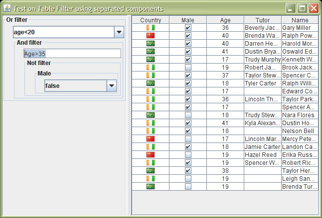

Standalone editors
Although the TableFilterHeader is the compact way to use the filter editors, it is obviously possible to handle them on their own.
All the filter editors implement the ITableFilterEditor interface, so they can provide IFilterObservable instances. Attaching a IFilterObserver to it, it is possible to obtain the filter provided by that editor.
The TableFilter class can simplify this process; it supports the adding of one or more filter editors, and it is intended to be associated to a table. When the user modifies those editors, the resulting filter is automatically propagated to the table.
All the filter editors included in the TableFilter are and-composed. That is, the table will filter out all the rows that do not match all the filter expressions. It behaves, therefore, as the TableFilterHeader, where the rows must verify the filters setup for each column. In fact, the TableFilterHeader contains internally a TableFilter, but this relationship is not visible to the user.
However, it is possible to link the filter editors in different compositions. The classes AndFilter, OrFilter and NotFilter permit creating different logical results. The TableFilter, is, in fact, an specialization of the AndFilter.
The source distribution of this library contains a test program that shows this standalone usage of editors (AppTestWithSeparateComponents.java), with a Gui like:

In this example, there are three different filter editors. From top to bottom, a TextChoiceFilterEditor, a TextFilterEditor, and a ChoiceFilterEditor, composing the final filter expression: (age < 20) OR ( ( Age > 35) AND NOT (male = false))
The code required to setup this scenario is, not including the creation of the filter editors:
TableFilter tableFilter = new TableFilter();
tableFilter.setTable(table);
tableFilter.addFilterObservable(
new OrFilter(topFilter.getFilterObservable(),
new AndFilter(
middleFilter.getFilterObservable(),
new NotFilter(bottomFilter.getFilterObservable()))));
Using the editors in this way implies that the programmer must take care of all the details concerning the editors initialization and their updates if the table changes. In special:
- In case of parsing editors, it is needed to create and associate a IFilterTextParser instance.
- In case that the table's structure can change, any update should be propagated to the editors and to the used parser.
The initialization of editors and the IFilterTextParser requires the handling two concepts:
- Identifiers: these are the variables handled by the parser. Each identifier has a name, a type, and a filter position.
- Filter position: A filter supporting the interface RowFilter receives an instance of type RowFilter.Entry that it can enquiry to obtain the value at a specified index; the filter position is that given index, and corresponds, in the case of a table, to the column to which this editor is associated.
The helper class TableFilterHelper can be used to create the identifiers of a table, or to create directly a parser already initialized. It reads the headers of the table, and their associated types, to extract the table's identifiers, in the same way that the TableFilterHeader does:
FilterTextParser parser = TableFilterHelper.createTextFilterParser(tableModel); topFilter.setTextParser(parser); middleFilter.setTextParser(parser);